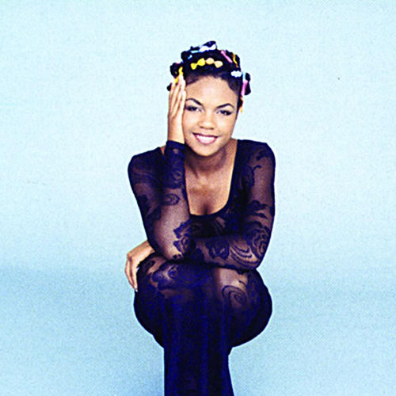

Puff Johnson
Ewanya "Puff" Johnson was an American R&B singer-songwriter. Born in Detroit, she emerged on the music scene with her singles "Forever More" and "Over and Over", which experienced commercial success in Europe and Australia. These songs were included on her only album Miracle (1996). In the early- to mid-2000s, she was listed as a co-writer on several projects and relocated to South Africa where she began working on an unreleased second album. In March 2008 Johnson was diagnosed with cervical cancer and subsequently, five years later on June 24, 2013, died of the disease.
Complete Discography & Tracklists (4)
1996 All Over Your Face 🎵 7 Tracks
1996 Over And Over 🎵 0 Tracks
No tracks registered.
1996 Forever More 🎵 0 Tracks
No tracks registered.